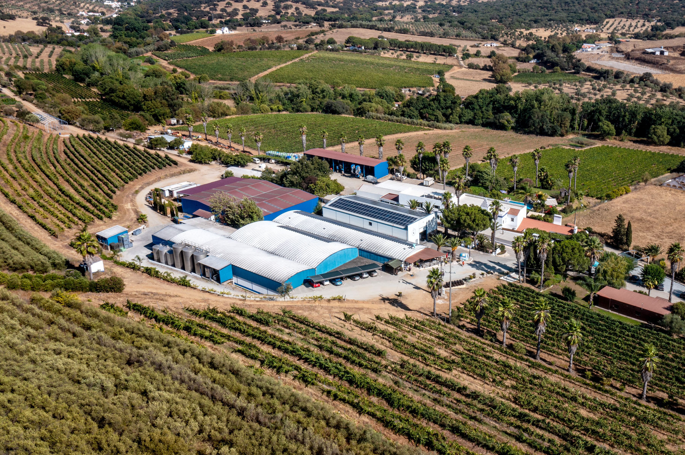
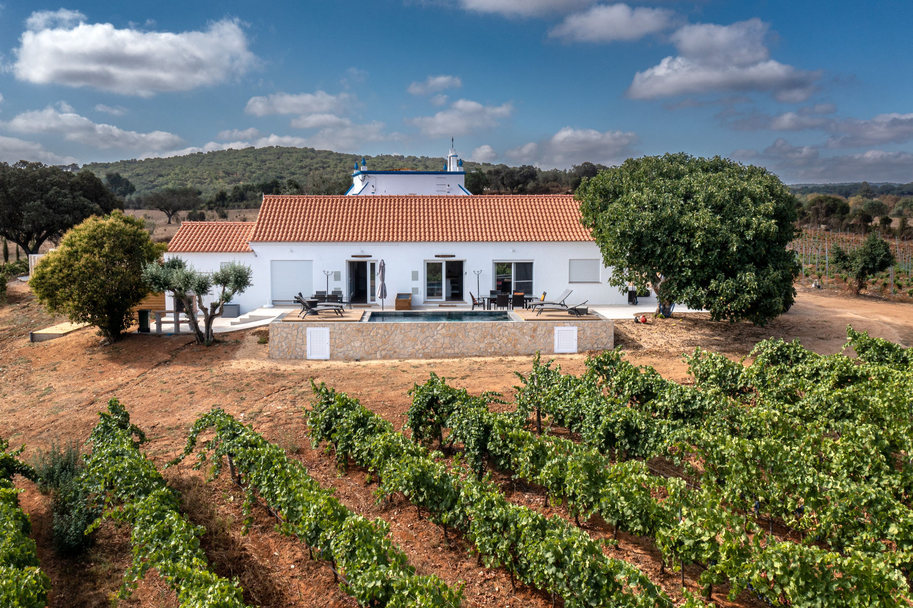
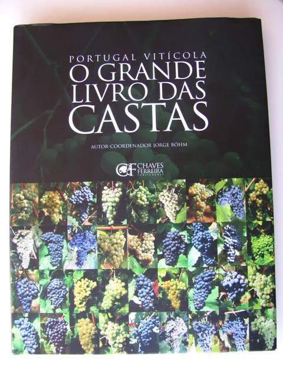
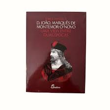

Alentejo · Portugal · seit 1975
Weine aus den Reben, auf denen Portugal wächst.
Jedes zweite Weingut in Portugal pflanzt Reben aus Plansel-Selektion. Die besten davon keltern wir selbst: gehobene Weine aus dem Alentejo, belegt durch 50 Jahre Forschung.

- 1975Erste Rebflächen in Montemor-o-Novo
- ~50 %der zertifizierten Reben Portugals aus Plansel-Klonen*
- 50+Jahre Klonselektion portugiesischer Sorten
- 400.000 lWein pro Jahr aus der Quinta da Plansel
- WSETInternational Wine School auf dem Weingut
* Firmenangabe Plansel, zitiert bei Vinetur, 9. Nov. 2026
Quinta da Plansel · Weine
Gehobener Wein aus Portugal. Mit Herkunftsnachweis bis zur Rebe.
Dorina, Önologin aus Geisenheim, keltert seit 1993 aus den Reben ihres Vaters. Von jeder Flasche wissen wir, von welchem Klon sie stammt.
Dorina schreiben


Enoturismo · Quinta da Plansel
Top-Erlebnisse, eine Stunde von Lissabon.
Verkostungen im Keller, Wine & Dine zwischen den Reben, Übernachten auf der Quinta und die Plansel Gin Experience.




Plansel International Wine School
Sommeliers lernen dort, wo der Wein entsteht.
Offizielle WSET-Kurse nach dem Londoner Standard, unterrichtet von WSET-Educatorin Wilmy Matton, Önologin Dorina Lindemann und Gastprofessoren. Zwischen Rebschule, Labor und Keller.
- WSET Level 1 · WinesEinstieg für Gastronomie und Weinfreunde1 Tag
- WSET Level 2 · WinesRebsorten und Regionen der Welt3 Tage
- WSET Level 3 · WinesFür angehende Sommeliers5 Tage
- Masterclass PortugalKlone, Terroir, Keller. Mit dem Böhm-Archiv2 Tage
info@planselwineschool.com · +351 266 898 921
Plansel Science · Das Böhm-Archiv
Die Wissenschaft hinter jeder Flasche.
Plansel heißt „Plantas Seleccionadas“. Hinter dem Namen steht ein Forschungsprogramm, das mit Universitäten arbeitet und die Rebsorten Portugals für das Klima von morgen vorbereitet.


„Portugal braucht seine eigene Forschung, damit es nicht von Sorten abhängig wird, die zu seinem Boden und Klima nicht passen.“
Comendador Jorge (Hans Jörg) Böhm, geboren 1938 in Neustadt an der Weinstraße, stammt aus einer deutschen Weinhändlerfamilie. 1961 strandete sein Segelschiff bei Cascais, und er verliebte sich in Portugal. Schon 1969 war das Familienunternehmen unter seiner Führung der größte Importeur portugiesischer Weine in Deutschland.
Nach einem Studium der Rebenzüchtung in Geisenheim gründete er 1981 Viveiros Plansel und begann die erste systematische Klonselektion portugiesischer Rebsorten, mit der Universidade de Évora und dem heutigen INIAV. Über 30 Forschungsprojekte später sind Plansel-Klone in Kalifornien, Neuseeland und Australien anerkannt, und ein großer Teil der Weinberge Portugals steht auf Plansel-Reben, vertrieben über Viveiros Plansel und Vinverus.
2006 ernannte ihn der Präsident der Portugiesischen Republik zum Comendador de Mérito Agrícola.

OIV Award 2010Das Standardwerk · Chaves Ferreira, 2007
O Grande Livro das Castas
Das große Buch der Rebsorten Portugals. Herausgegeben von Comendador Jorge Böhm, ausgezeichnet von der Internationalen Organisation für Rebe und Wein (OIV). Es beschreibt die autochthonen Sorten des Landes, aus denen auch die Plansel-Weine entstehen.
PT · OriginalErhältlich
DE · ENKI-Übersetzung, Vorbestellung
FR · ES2027
中文 · PL2027
-
 Neu · 2026Livro Branco das Castas VitícolasNeue Rebsorten mit Pilzresistenz: wie Portugal weniger Pflanzenschutz braucht.
Neu · 2026Livro Branco das Castas VitícolasNeue Rebsorten mit Pilzresistenz: wie Portugal weniger Pflanzenschutz braucht. -
 EnglishThe Portuguese Vineyard and Wine BookGeschichte, Rebsorten, Terroir, Weinregionen und Essen zum Wein.
EnglishThe Portuguese Vineyard and Wine BookGeschichte, Rebsorten, Terroir, Weinregionen und Essen zum Wein. -

Dinalivro · 2010D. João, Marquês de Montemor-o-NovoDie Geschichte hinter unserer Weinlinie Marquês de Montemor.
2006Comendador de Mérito Agrícola, ernannt vom Präsidenten der Republik
2008Bester Weinbautechniker, Revista de Vinhos
2 × OIVBuchpreise der Internationalen Organisation für Rebe und Wein
2013Ehrenplakette der Universidade de Évora
2014Ehrenmedaille der Academia das Ciências de Lisboa
Klonselektion
Aus alten Weinbergen werden die gesündesten, ausdrucksstärksten Stöcke ausgewählt und vermehrt.
Resistente Sorten
Reben, die mit weniger Pflanzenschutz auskommen. Böhm hält das für die wichtigste Aufgabe der Branche.
Klimawandel
Pflanzmaterial für heißere Sommer und weniger Wasser, getestet im Alentejo.
Alte Sorten
Fast vergessene portugiesische Rebsorten werden wiederentdeckt und im Wein erprobt.
Fragen Sie das Böhm-Archiv
KI-PrototypEine KI, trainiert auf 50 Jahren Plansel-Forschung, beantwortet Fachfragen in Ihrer Sprache und nennt die Quelle im Buch. Wählen Sie eine Beispielfrage:
Plansel Guide · jede Woche neu
Wo Wein gerade passiert.
Messen, Verkostungen, Weingüter, Restaurants und Hotels. Kuratiert von unserem Team, sortiert mit KI, jeden Donnerstag aktualisiert.
Ausgabe 47Donnerstag, 19. November 2026
Entwurf: Messetermine sind vorläufig. Mit „Beispiel“ markierte Einträge sind Platzhalter für echte Partner.
Anzeige · 970 × 250 Billboard · über symplr
The Plansel Wine Letter · jeden Donnerstag
Fünf Minuten, die Ihr Weinwissen erweitern.
Kostenlos, in Ihrer Sprache. Mit Inhalten aus der Wine School und dem Böhm-Archiv.
- 01Wein-Events weltweit in den nächsten 30 Tagen
- 02Termine in Portugal rund um Wein
- 03Ein Weingut der Woche
- 04Restaurants mit guter Weinkarte und Plansel
- 05Hotels in Portugal, in denen Sie Plansel trinken
- 06Eine Lektion aus der Wine School
Netzwerk
Mit wem wir arbeiten.

Universidade de ÉvoraGemeinsame Forschung seit den ersten Weinen 1993
INIAVNationales Institut für Agrar- und Veterinärforschung
WSET LondonZertifizierte Kurse der Wine School
MeiningerMedienpartner für den deutschsprachigen Weinmarkt